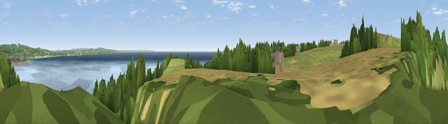

Viewpoint near Paul
#6162 in England · top 19% of its area beats it · near PaulWhere it is
The exact computed spot (SW 46575 27525). Click the marker for map links.
The view, rendered

A 360° render of this exact spot computed from the terrain model, tree cover and land cover — summer colours, afternoon light, calibrated against photographs of famous viewpoints. Real trees, hedges and buildings will differ in detail.
The panorama
Grey silhouette: terrain skyline in each direction (720 bearings, Earth curvature and refraction included). Dashed green: skyline with trees (+15 m) and buildings (+8 m) as obstacles. Blue strip: how far the ground is visible on each bearing.
Where the view opens
Wedge length = distance to the farthest visible ground on that bearing (vegetation-aware). Rings at 10, 25 and 50 km.
What fills the view
37% water · 27% grassland · 25% woodland · 7% cropland · 3% built-up · 1% bare ground
Angular shares of the visible panorama (visual magnitude), not map area. Landscape diversity 0.61 (0–1 Shannon).
Key numbers
More beautiful places nearby
The staircase of upgrades: each row has a higher view potential than everything closer. Driving times are estimates from straight-line distance, calibrated against real road routing — check an actual route before setting out.
| Place | Direction | Drive | Score |
|---|---|---|---|
| Viewpoint near Paul | WNW · 0 km | ~1 min | 74.3 |
| Viewpoint near Gulval | NNE · 7 km | ~15 min | 76.6 |
| Viewpoint near Towednack | NNE · 8 km | ~16 min | 79.1 |
| Viewpoint near Bosavern | W · 8 km | ~16 min | 82.4 |
| Viewpoint near Porthmeor | NNW · 9 km | ~19 min | 84.8 |
| Rosewall Hill | N · 12 km | ~22 min | 88.0 |
| Viewpoint near Combe Martin | NE · 165 km | ~187 min | 88.9 |
| Holdstone Hill | NE · 166 km | ~188 min | 90.2 |
50.09365, -5.54467 · source: screening · position refined by local search. Computed location — check access rights before visiting.